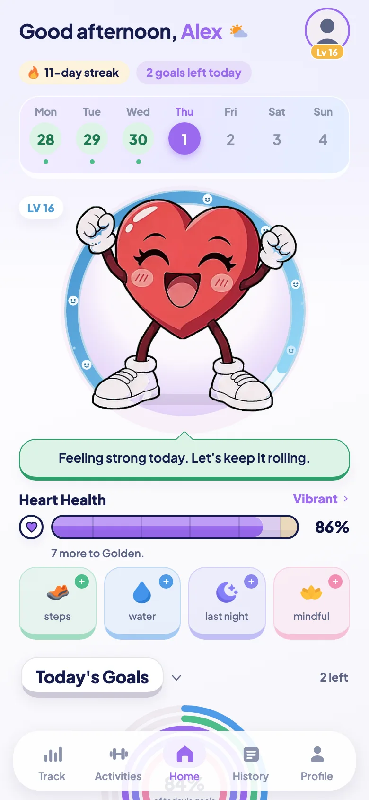
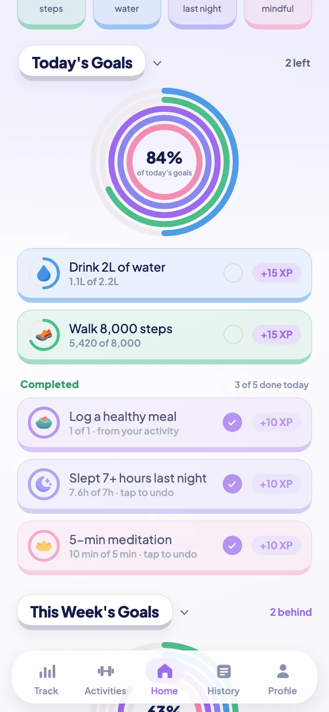
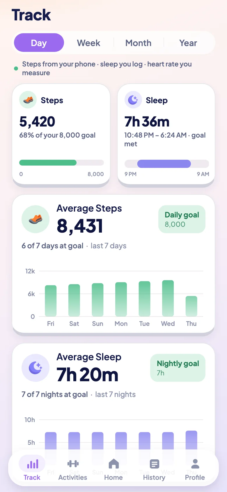
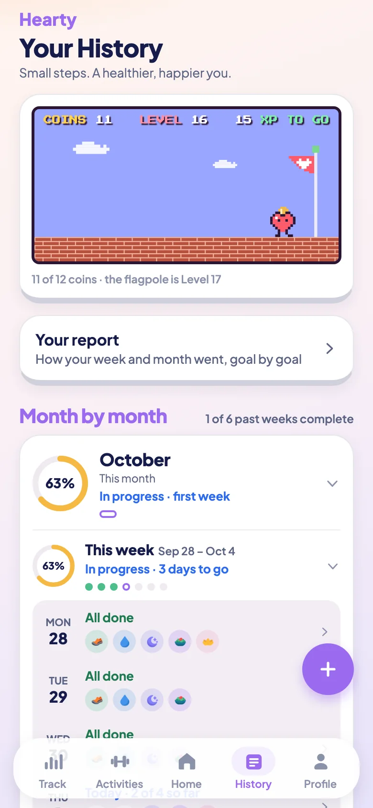
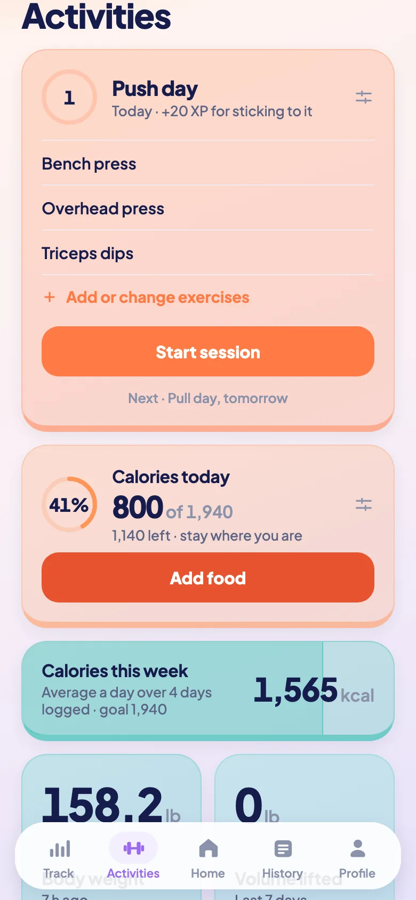
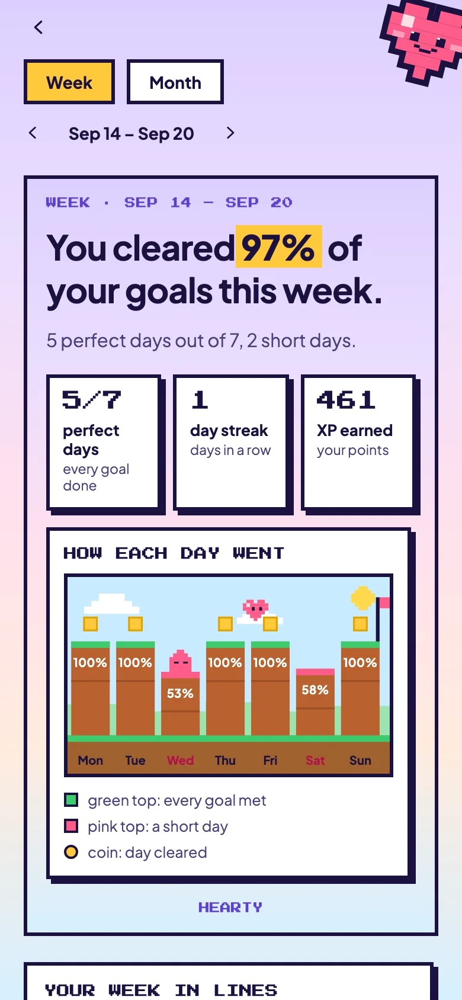
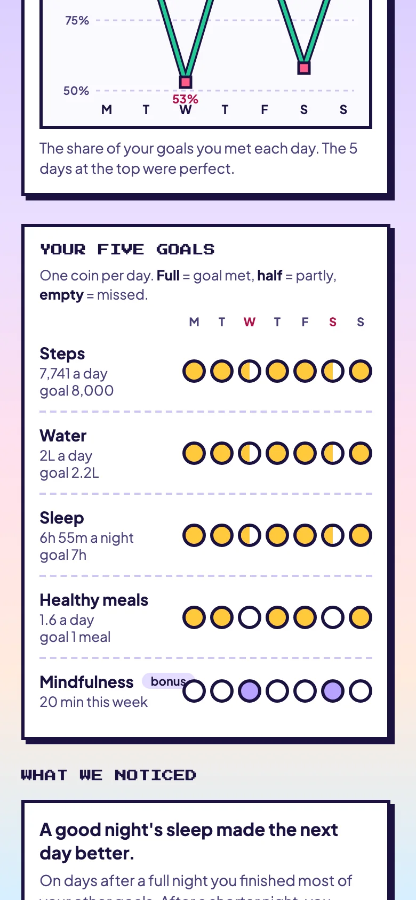
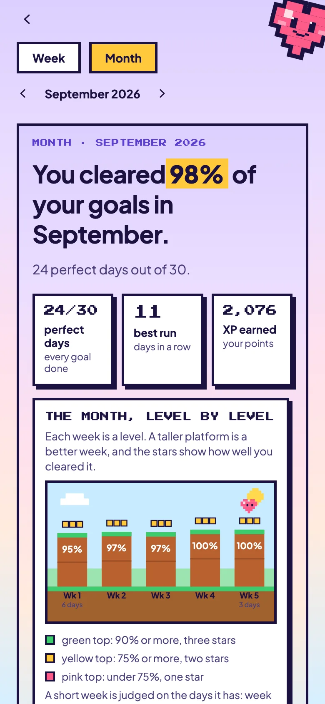
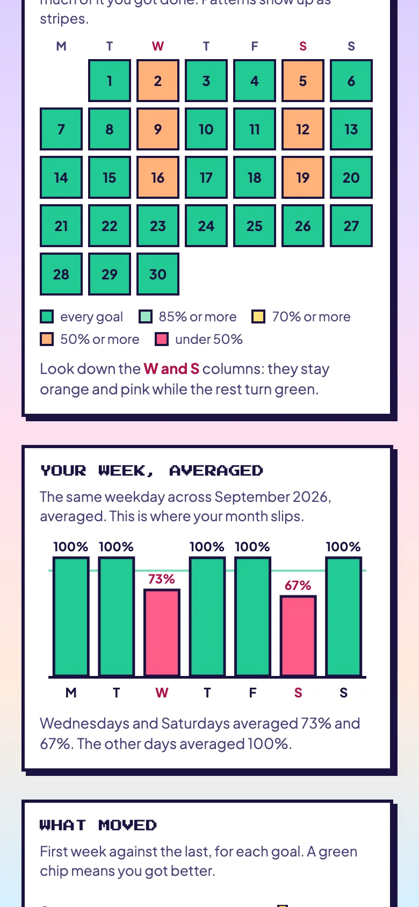

About Hearty
A habit tracker built around a heart that shows how you are doing.
Hearty turns small daily habits into something you can see. At the center is a heart character. When you look after yourself, it perks up; when you let things slide, it droops. It is a friendlier nudge than a streak counter or a checklist.
See it









These screens show a sample profile with made-up data, so they illustrate the app rather than anyone’s real week.
Five small daily goals
- Steps, counted by your iPhone.
- Water, logged in a tap.
- Sleep, from your own log, an estimate from your phone, or Apple Health.
- Healthy meals, logged as you eat them.
- Mindfulness, an optional bonus that never counts against you.
Your daily targets start from your age, weight and how active your day is, and you can change any of them. Past days keep the goals they were lived under, so changing a goal never rewrites your history.
A heart that reflects your habits
Finishing goals earns XP and raises your heart's health. The heart moves through six conditions, from withered to golden, and the top ones also need a run of consecutive days, so they have to be earned. Take a few days away and it slips gently, never all the way to zero.
More than the basics
- Workouts and lifting. Log any activity, run a timer, plan a weekly split, and track the weight you lift.
- Food and calories. A calorie tracker with a built-in food list and a daily aim that fits your goal.
- Weekly and monthly reports. See how your week or month went, goal by goal, with trends, your strongest and weakest weekdays, and a few things to try next.
- Apple Health, if you want it. Connect it to see heart rate, resting heart rate, heart rate variability and sleep from your watch. Hearty only reads. It never writes to Health.
- A home screen widget that shows your heart and today's progress.
- Reminders you can turn off, for goals left, a streak at risk, and bedtime.
Private by default
Everything Hearty stores stays on your phone. You do not need an account to use it, and there is no analytics, advertising or tracking of any kind. An optional backup, which you start yourself and which does use an email sign-in, can carry your history to a new phone. Read the full Privacy Policy for exactly what is and isn't kept.
A note on health
Hearty is for general wellbeing and motivation. It is not a medical device and does not give medical advice. See the Terms of Service.
Questions
Visit Support, or email hearty.app.official@gmail.com.